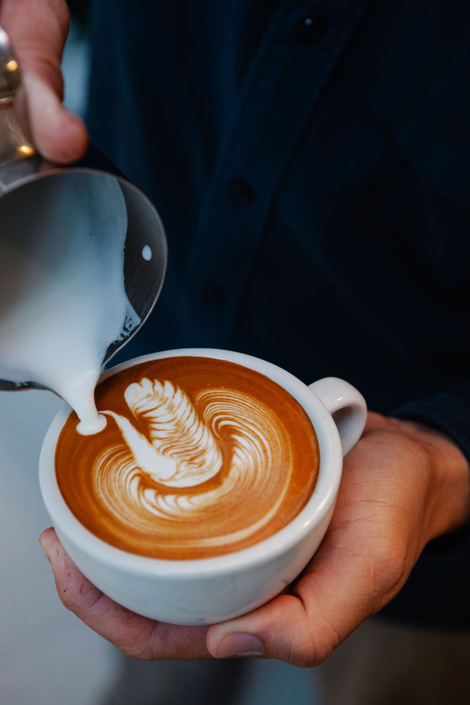

Espresso drinks
Espresso drinks served with sparkling water.

Specialty coffee in a tiny historic carriage house in Savannah, from roasters roasting since 2009.
Cup to Cup Cafe is the showcase cafe for Cup to Cup Coffee Roasters, roasting since 2009 with the cafe open since 2016. The cafe is a tiny, to-go-focused historic carriage house with very limited seating, pouring small-batch roasted coffee.
Espresso drinks served with sparkling water.
Lattes including Hot Toasted Marshmallow and chocolate-covered cherry.
Cascara Fizz, a sparkling coffee-cherry drink.
Cold brew and nitro coffee.
Pastries including almond croissants, gluten-free granola bars, and donuts.
Roasted beans for sale to take home.
Coffee training and consulting from the roastery team.
Catering for small events.
The cafe is a tiny historic carriage house built for to-go orders, with very limited seating. Plan on taking your coffee with you.


All gallery photos are stock photos, labeled as such. They show the kind of work and setting described on this page, not this business.
Address: 140 Abercorn St, Savannah, GA 31401
Hours: Monday-Saturday 7am-5pm, closed Sunday.
Phone: +1 912-376-9173
Cup to Cup Cafe serves Savannah. Questions? Call +1 912-376-9173.